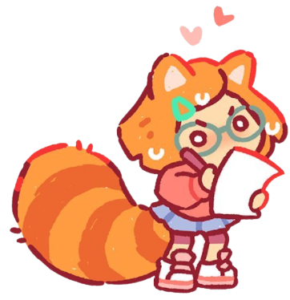

Da Disney e da Pixar, "Red - Crescer é uma Fera" conta a história de Mei Lee, uma garota de 13 anos vivendo o caos típico da adolescência. Mas além de precisar lidar com a mãe superprotetora e as mudanças em seu corpo e relacionamentos, Mei tem outro pequeno problema: sempre que se emociona demais, ela vira um panda-vermelho gigante!
Esse link abrirá o filme no Disney+, site oficial da Disney
Mei Lee é uma garota de treze anos confiante e besta, dividida entre permanecer a filha obediente de sua mãe e o caos da adolescência. Sempre que suas emoções a dominam (seja ficando muito animada ou com muito medo), ela se transforma em um panda vermelho gigante e tem que se acalmar para mudar de volta.
Miriam é uma garota divertida, amorosa e carinhosa que cuida e apoia seus amigos. Ela é descontraída, leal, um pouco moleca e pode fazer as pessoas rirem quando mais precisam. Ela também é muito carinhosa e gentil, especialmente com Mei, cuja vida foi virada de cabeça para baixo por seus poderes de panda vermelho. Miriam sempre deixa Mei saber que ela é amada, não importa sua aparência.
Priya é apresentada como a mais tranquila e suave das quatro garotas, ao mesmo tempo em que as apoia, ela sempre cuida de tudo. Apesar de ser inexpressiva e estóica na maioria das vezes, ela tende a ser tão animada quanto o resto de suas amigas. Priya está interessada em qualquer coisa que seja macabra.

Turning Red (também conhecido como Red em alguns países) é um filme de comédia-fantasia animado de 2022 produzido pela Pixar Animation Studios e distribuído pela Walt Disney Studios Motion Pictures. É dirigido por Domee Shi em sua estréia na direção de longa-metragem, a partir de um roteiro escrito por ela e Julia Cho. O filme é estrelado pelas vozes de Rosalie Chiang, Sandra Oh, Ava Morse, Maitreyi Ramakrishnan, Hyein Park, Orion Lee, Wai Ching Ho, Tristan Allerick Chen e James Hong. É o primeiro filme da Pixar a ser dirigido exclusivamente por uma mulher, o primeiro a se passar no Canadá e o segundo a apresentar um personagem principal asiático depois de Up. O filme é o 25º longa-metragem da Pixar.